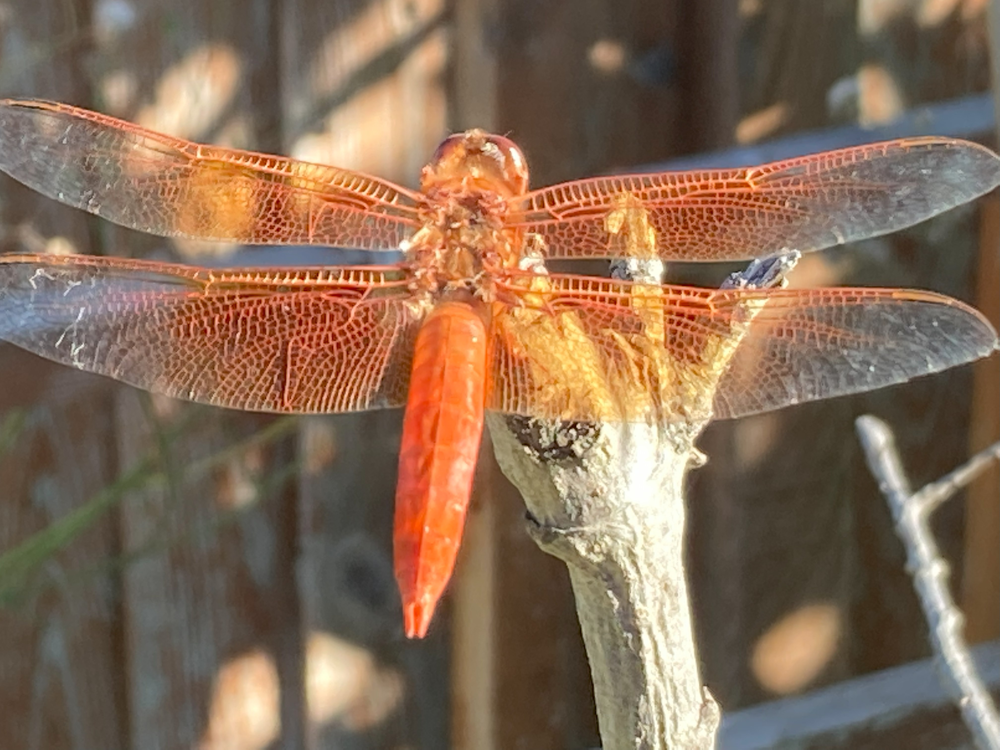
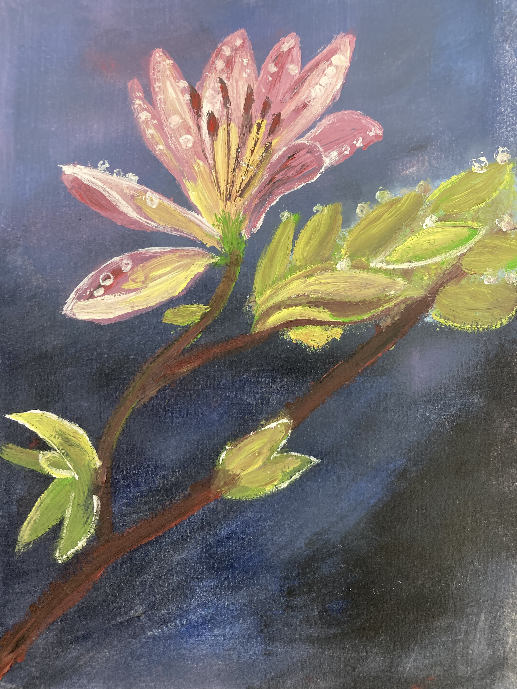
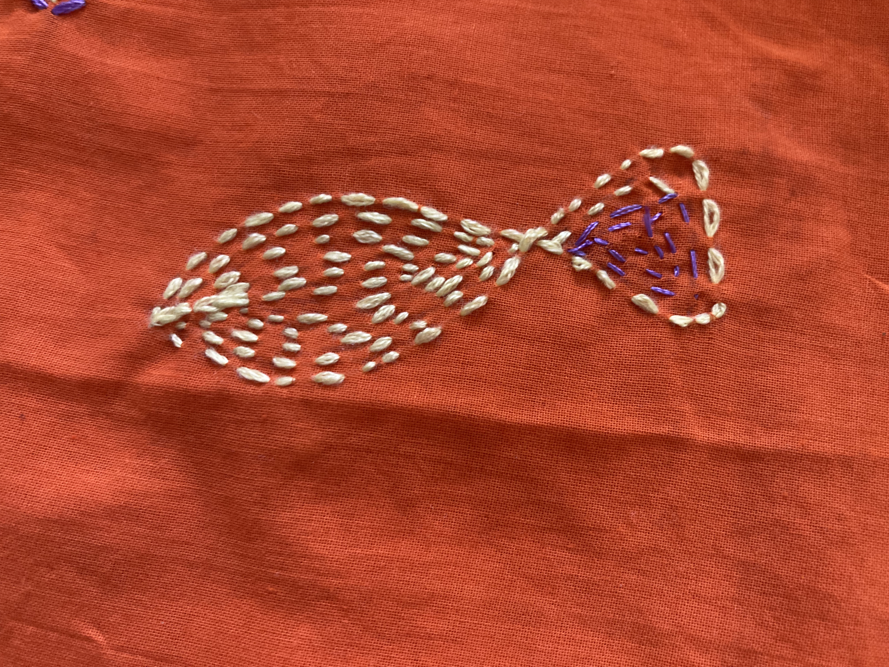
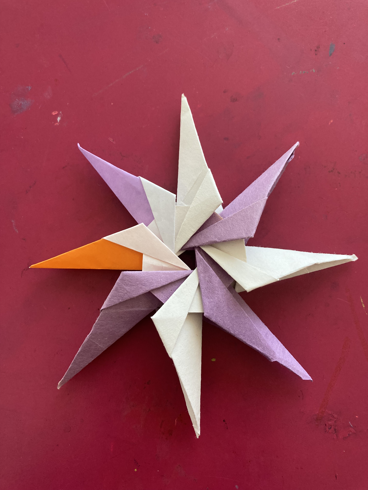
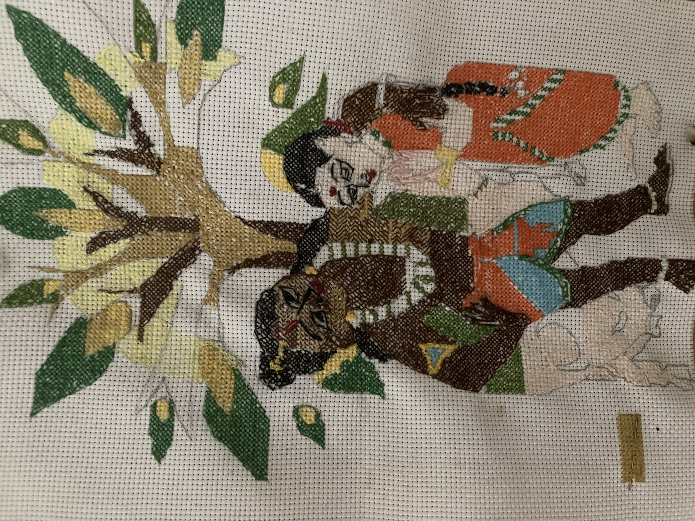

Sketching
Sketching
Feb 11th 2025
10 Min read
24 Gurus of Dattatreya

Garden
Feb 11th 2025
4 Min read
DragonFly in the Garden

Oil Painting
Feb 20th 2025
8 Min read
Bloom on a Tree

Stitching
Feb 18th 2025
2 Min read
Kantha stich

origami
Feb 11 2025
1 Min read
8Pointed Star origami
Feb 11 2025
2 Min read


{kind=link}
![ 2 Dec 2023 3 Min read Rukhmini and Krishnas Cross Stich we can understand the eternal relationship between the divine couple Sri Rukmini Krishna. She is personification of his divine attributes. She is his ichha shakti “willing potency”. She is the canvas through which he projects his kalyana gunas. He express his desires through her. For Sristi, Sthiti, Laya, Anugraha and Nigraha, they play the game in which she desires and he fulfills. He especially projects some special kalyana gunas like compassion, forgiveness and extreme love towards the devotees only through her. Gopala Tapani upanisada says Rukmini is the eternal consort of Krishna who is never separable from him and she is the potency with which he creates, operates and destroys the entire creations.](https://git-saiee.github.io/Saiee/Cross/images/radha-krishna.jpg){kind=link}